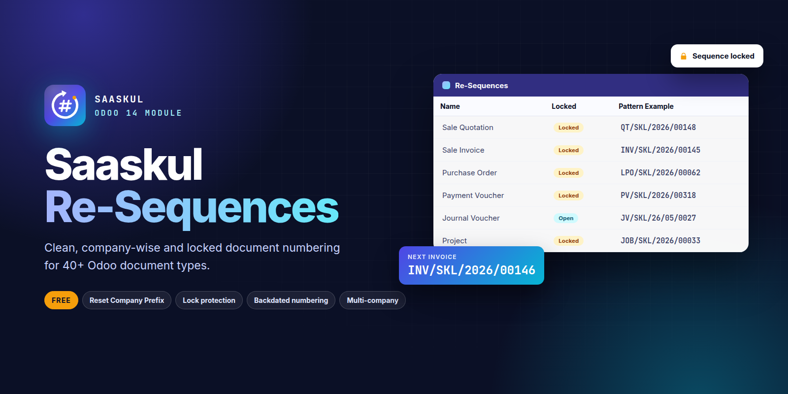
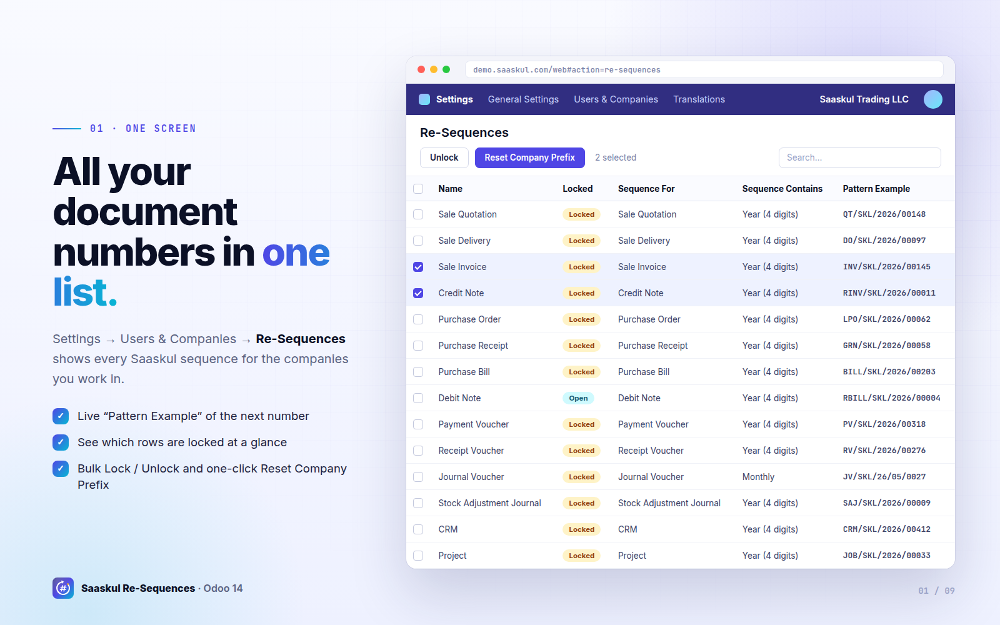
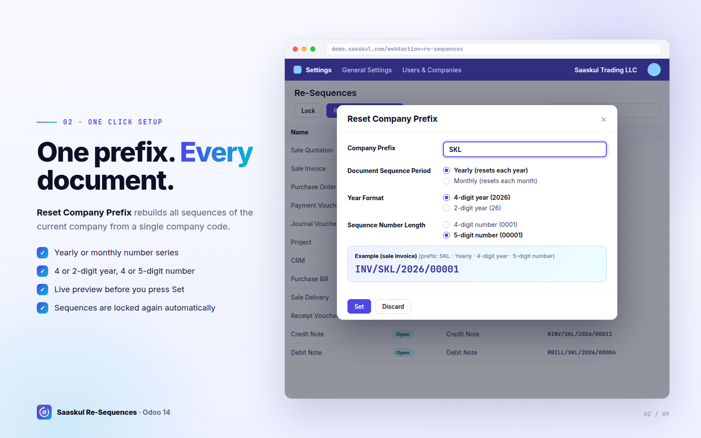
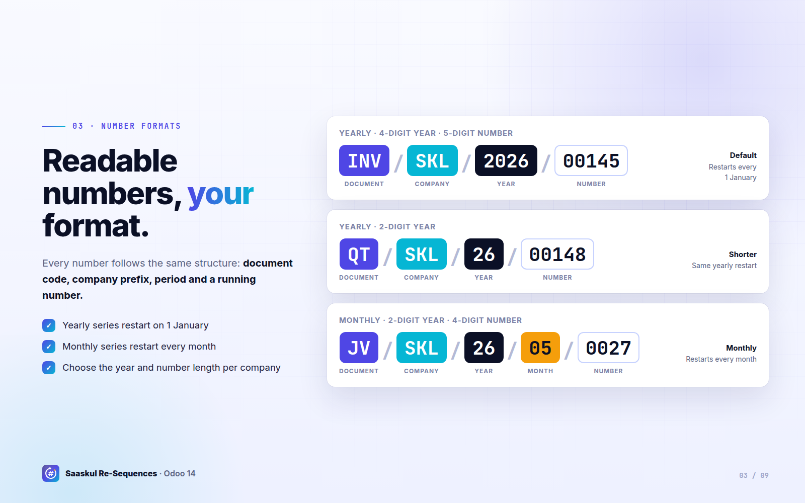
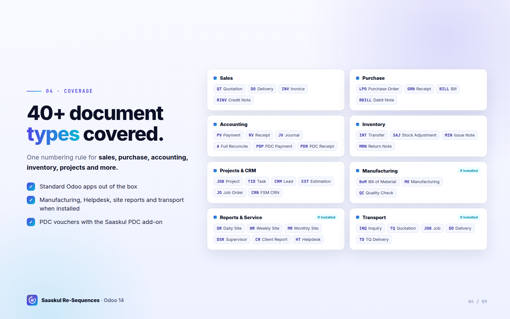
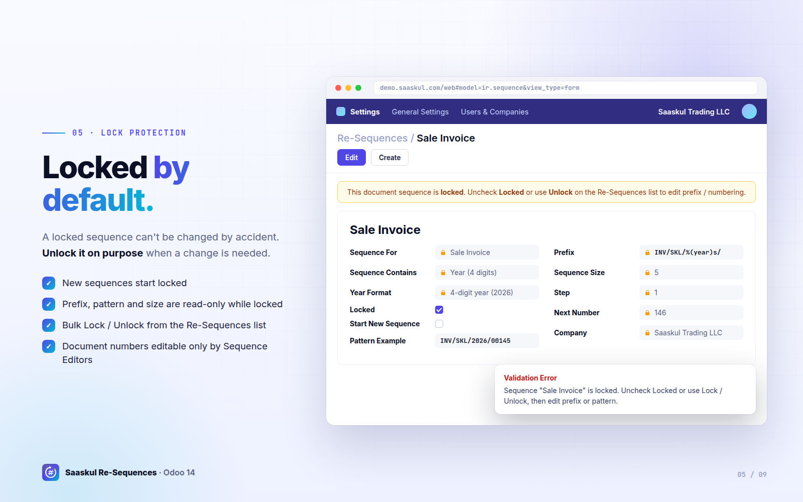
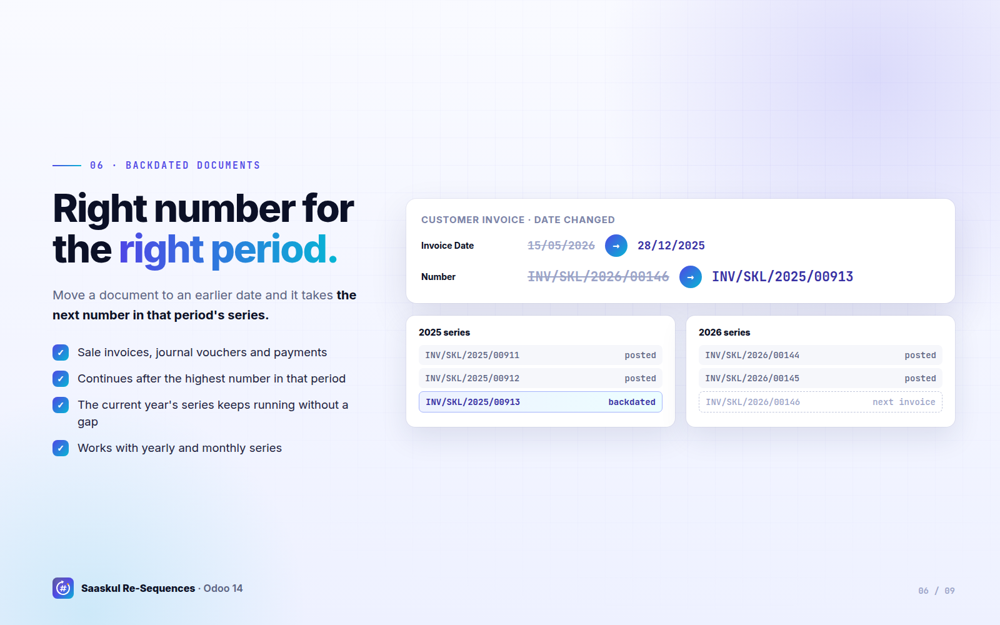
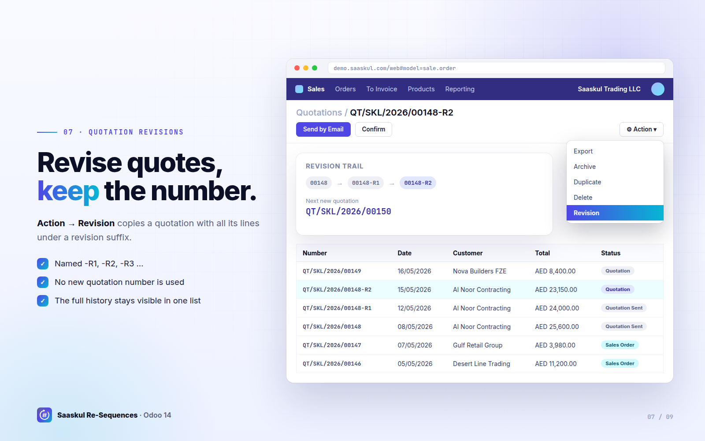
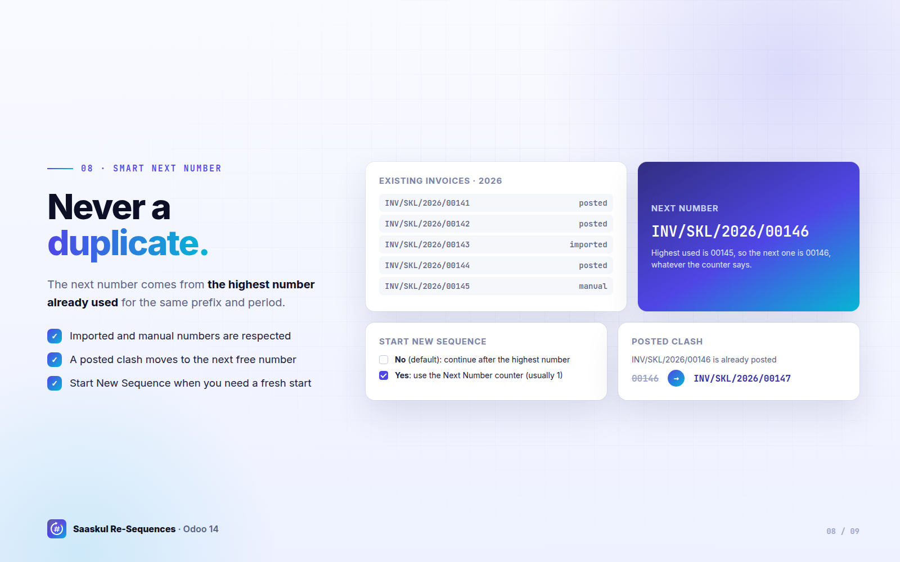
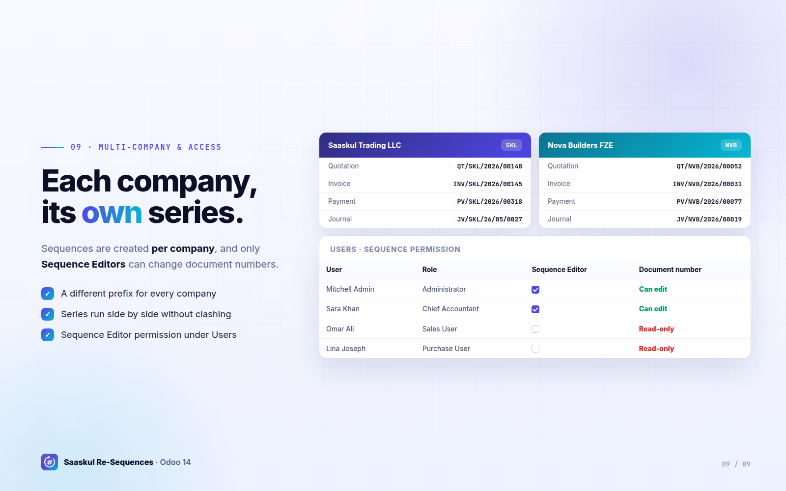

Every document number in your Odoo, clean, company-wise and locked. Set one company prefix and get consistent numbering for 40+ document types: quotations, invoices, vouchers, deliveries, projects and more.

Standard Odoo keeps sequences in many places, with different formats per app. Re-Sequences gives you one screen and one rule for all of them.
✗ Different formats in every app
✗ Prefixes edited one sequence at a time
✗ Backdated documents land in the wrong year
✗ Anyone can change a number or a prefix
✓ One pattern: CODE / COMPANY / YEAR / NUMBER
✓ One wizard sets the prefix for every document type
✓ Backdated documents use their own period's series
✓ Locked sequences and a Sequence Editor permission
All document sequences in one list, with a live Pattern Example of the next number.
Type a prefix like SKL once. Every sequence for the company is rebuilt in one click.
4 or 2-digit year, 4 or 5-digit number. Counters restart each year or each month.
Sales, purchase, accounting, inventory, projects, CRM, manufacturing, helpdesk and more.
Locked sequences can't have their prefix or pattern changed until someone unlocks them.
An invoice dated last year gets the next number in last year's series, not this year's.
Revise a quotation as -R1, -R2… without using up a new quotation number.
Continues after the highest number already used and skips any posted duplicate.
Each company gets its own prefix. Only Sequence Editors can change document numbers.
Open Settings → Users & Companies → Re-Sequences to see every Saaskul sequence for the companies you're working in: name, lock state, document type, period format and a live Pattern Example of the next number.

Enter your company code, choose a yearly or monthly series, the year format and the number length. The Pattern Preview shows the result before you apply it. Every document type for the company is updated at once and locked automatically afterwards.

Every option keeps the same readable structure: document code, company prefix, period and a padded running number.

Types for optional apps (Manufacturing, Helpdesk, site reports, transport, PDC) apply when those apps are installed.

New sequences are locked by default. On a locked sequence the name, prefix, pattern and implementation can't be edited. Select rows and press Lock / Unlock when a change is really needed.
The document number on invoices, quotations, purchase orders and transfers can only be edited by users in the Sequence Editor group.

Change an invoice, journal voucher or payment date to an earlier year or month and its number moves to that period's series, continuing after the highest number already used there. For example INV/SKL/2026/00146 moved to December 2025 becomes INV/SKL/2025/00913.

Use Action → Revision on a quotation to copy it with all its lines as QT/SKL/2026/00148-R1, then -R2 and so on. The original keeps its number and new quotations simply continue the normal series.

By default the next number continues after the highest number already used for the current prefix and period, even after imports or manual entries. If a posted entry already has the same number, the next free one is used. Turn on Start New Sequence when you really want to restart from the counter.

Sequences are created per company, so INV/SKL/… and INV/NVB/… run side by side without clashing. Give the Sequence Editor permission only to the people who may change document numbers.

Install Saaskul Re-Sequences. Missing sequences are created for your companies, locked by default.
Unlock the rows, open Reset Company Prefix, type your code and choose the format.
Create documents normally. Numbers follow the rule, sequences relock and only editors can change them.
Need help setting up prefixes or migrating existing numbers? The Saaskul team is happy to help.
info.cpabooks@gmail.com